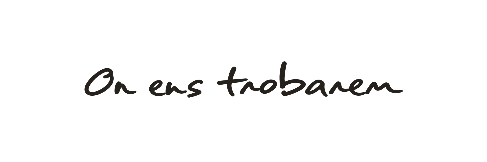
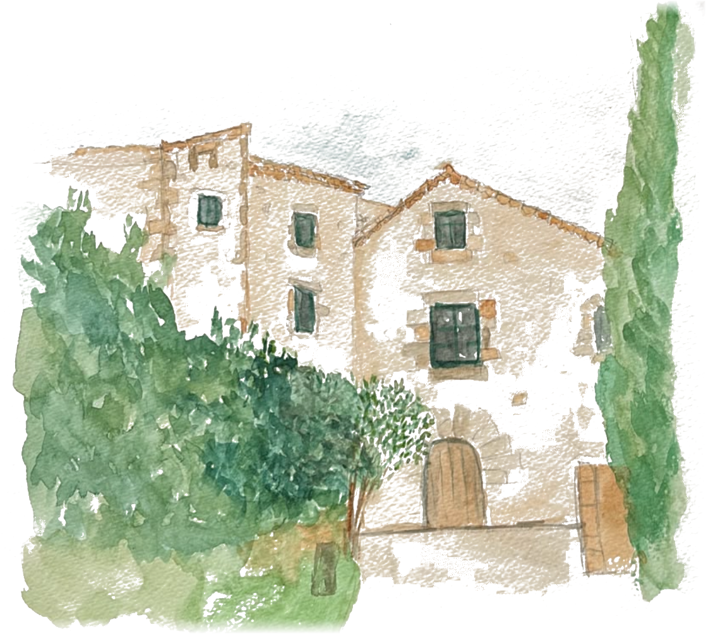

L’espai
Nom del lloc
Carrer de l’Exemple, 1
08000 Barcelona
Com arribar-hi
En cotxe — Hi ha aparcament gratuït a l’entrada.
En transport públic — Hi haurà autobusos de tornada a la ciutat a la matinada. Us direm els horaris més endavant.
On dormir
Us recomanem alguns allotjaments a prop. Si necessiteu ajuda, escriviu-nos.